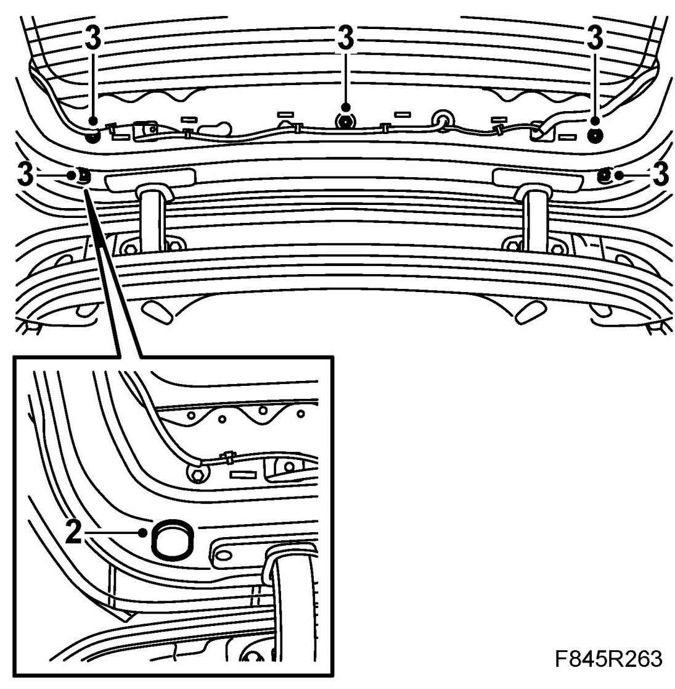
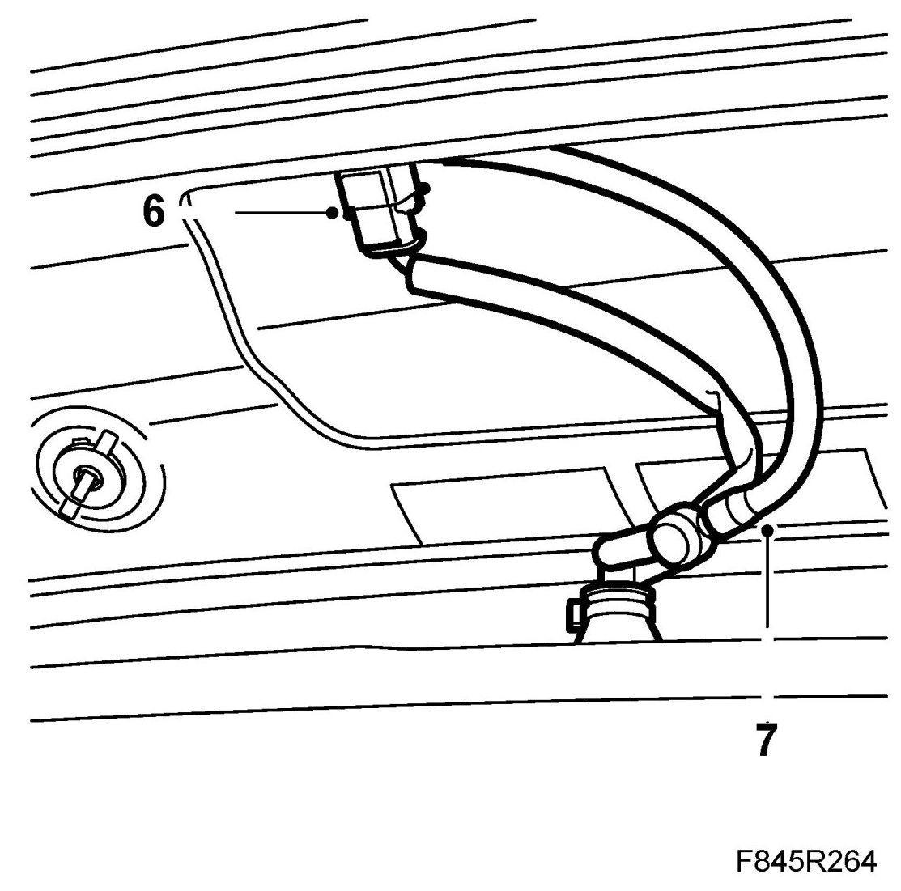
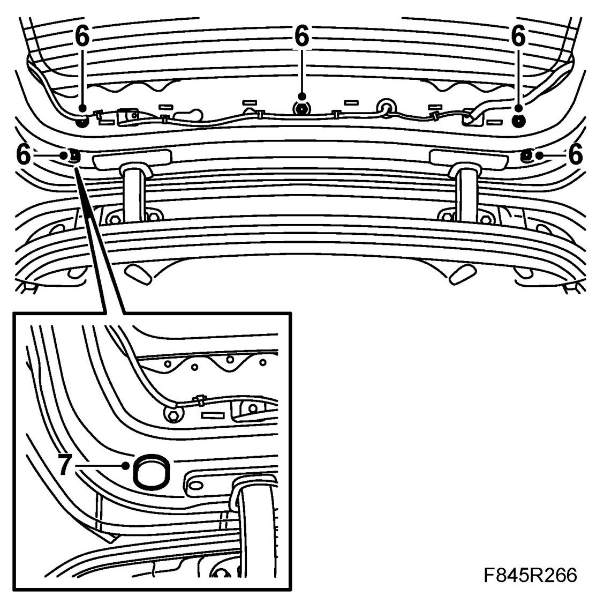

Upper Spoiler, 5D
Upper Spoiler, 5D
To remove
1. Remove Window cover plates, tailgate, 5D.
2. Remove the rubber plugs.

3. Remove the nuts.
4. Close the tailgate.
5. Lift up the spoiler.
6. Unplug the connector.

7. Remove the hose to the washer jet.
8. Lift out the spoiler.
To fit
1. Make sure the spoiler seals are in place.
2. Lift the spoiler in place.
3. Fit the hose to the washer jet.
4. Fit the connector.
5. Open the tailgate.
6. Fit the spoiler nuts.
Tightening torque up to and including M06 10 Nm (7 lbf ft)
Tightening torque from and including M07 8 Nm (6 lbf ft)

7. Fit the rubber plugs.
8. Fit Window cover plates, tailgate, 5D.